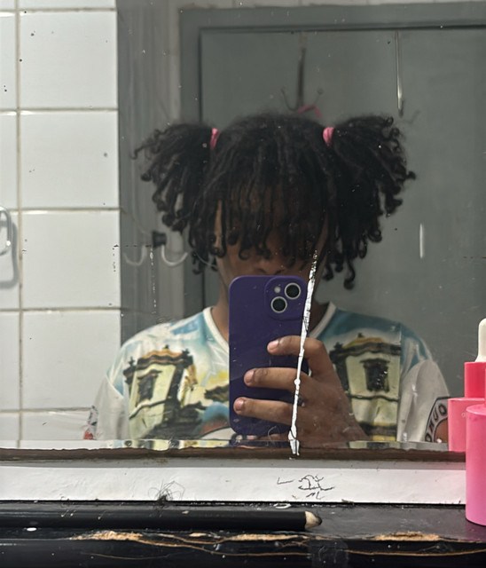

Yung Exu é um rapper, cantor e produtor brasileiro da cena underground, conhecido por misturar trap, plug, cloud rap e emo rap com influências de rock alternativo. Seu trabalho se destaca pelas produções atmosféricas, melodias marcantes e letras que abordam temas como conflitos internos, relacionamentos, ambição e amadurecimento, consolidando seu nome como um dos artistas em ascensão na nova geração do rap brasileiro.
